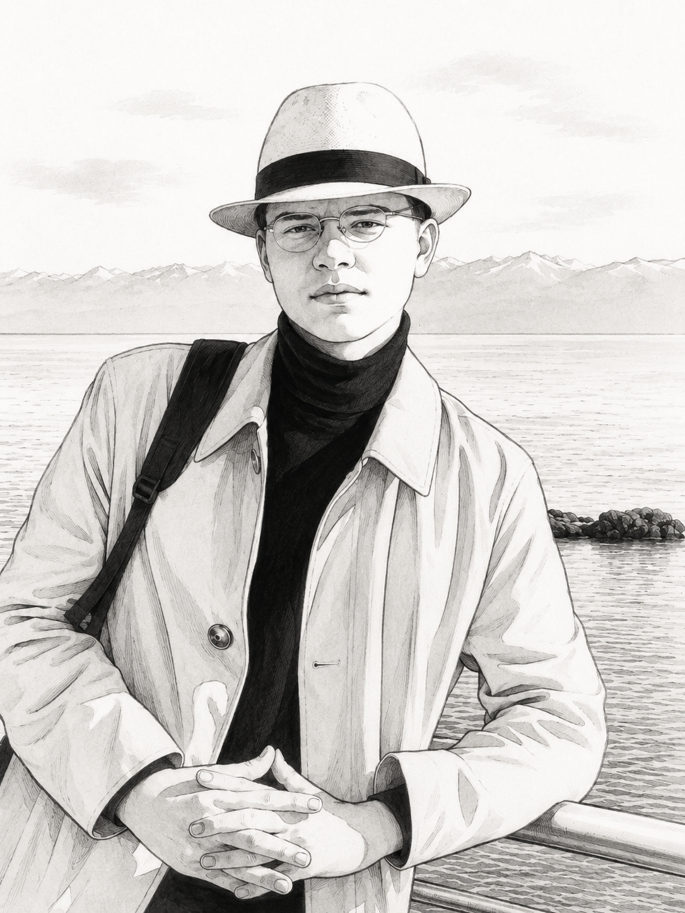

Von stillen Seen und langen Straßen
Ein erster Platzhalter für einen großen Reisebericht mit Route, Etappen und persönlichen Beobachtungen.
WeiterlesenReiseblog im Aufbau
Ein heller, persönlicher Ort für Reiseberichte, Routenideen, ehrliche Notizen und kleine Fundstücke von unterwegs.
Routen, Orte und Momente werden hier später als lesbare Blogposts gesammelt.
Das Layout ist für echte Fotos, Kategorien und längere WordPress-ähnliche Artikel vorbereitet.
Die Startseite ist für einfache statische Veröffentlichung vorbereitet.
Aus dem Reisejournal
Platzhaltertexte mit Struktur für spätere echte Artikel, Fotos und Kategorien.

Ein erster Platzhalter für einen großen Reisebericht mit Route, Etappen und persönlichen Beobachtungen.
Weiterlesen
Kurze Reisegedanken für einen atmosphärischen Artikel.

Ein vorbereiteter Guide-Slot für Listen, Tipps und Links.

Platz für eine persönliche Einführung und den Ton des Blogs.

Ein ruhiger Kartenplatz für Lieblingsorte, Fotoserien oder Monatsrückblicke.